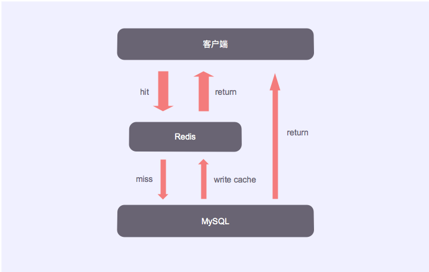

Redis缓存设计
我们平时使用 Redis 最常用的场景就是缓存，缓存能够有效加快应用的读写速度，降低后端负载，但是使用缓存时也需要注意一些事项。
本文基于 Redis 3.2
缓存更新策略
LRU/LFU/FIFO算法剔除
这种策略通常是在内存已满，需要再分配一部分内存给新的对象时使用的，对于 Redis 来讲，可以设置 maxmemory-policy来决定使用哪种策略，Redis 3.2 支持6种策略：
noeviction 不会继续服务写请求 (DEL 请求可以继续服务)，读请求可以继续进行。这样可以保证不会丢失数据，但是会让线上的业务不能持续进行。这是默认的淘汰策略。
volatile-lru 尝试淘汰设置了过期时间的 key，最少使用的 key 优先被淘汰。没有设置过期时间的 key 不会被淘汰，这样可以保证需要持久化的数据不会突然丢失。
volatile-ttl 跟上面一样，除了淘汰的策略不是 LRU，而是 key 的剩余寿命 ttl 的值，ttl 越小越优先被淘汰。
volatile-random 跟上面一样，不过淘汰的 key 是过期 key 集合中随机的 key。
allkeys-lru 区别于 volatile-lru，这个策略要淘汰的 key 对象是全体的 key 集合，而不只是过期的 key 集合。这意味着没有设置过期时间的 key 也会被淘汰。
allkeys-random 跟上面一样，不过淘汰的策略是随机的 key。
超时剔除
超时剔除是给缓存的数据设置过期时间，让其在过期时间后自动删除，Redis 提供 expire 命令可以对缓存的数据设置过期时间，建议大家使用 Redis 时都要对 key 设置过期时间。
Redis 过期策略
Redis中是怎么实现超时删除的呢？这里主要是采用了两种策略：惰性删除和定时删除。
惰性删除
key过期的时候不删除，每次从数据库获取key的时候去检查是否过期，若过期，则删除，返回null。
定时删除
redis 会将每个设置了过期时间的 key 放入到一个独立的字典中，以后会定时遍历这个字典来删除到期的 key。
Redis 默认会每秒进行十次过期扫描，过期扫描不会遍历过期字典中所有的 key，而是采用了一种简单的贪心策略。
- 从过期字典中随机 20 个 key；
- 删除这 20 个 key 中已经过期的 key；
- 如果过期的 key 比率超过 1/4，那就重复步骤 1；
同时，为了保证过期扫描不会出现循环过度，导致线程卡死现象，算法还增加了扫描时间的上限，默认不会超过 25ms。
主动更新
主动更新是指在真实数据更新后，立即更新缓存数据，比如可以通过 MQ 或者其他方式通知缓存更新。
缓存穿透
在项目中使用 Redis 作为缓存一种常见的架构如下图所示：

缓存穿透是指查询一个根本不存在的数据，缓存层和存储层都不命中，通常出于容错的考虑，如果在存储层查不到数据则不写入缓存层。缓存穿透将导致不存在的数据请求每次都要到存储层去查询，失去了缓存保护后端的意义。
缓存穿透的基本原因有两个：一是自身业务代码或数据出现问题，而是遭受一些恶意攻击。
解决缓存穿透的方法通常有两个：
缓存空对象
缓存空对象是指当从存储层查询不到数据时，可以在缓存层存储一个空对象（或者一个特殊标记），之后再次访问这个数据就可以从缓存中获取。
缓存空对象意味着缓存层存了更多的 key，需要更多的内存空间、如果是恶意攻击导致的缓存穿透，问题更严重，这时可以设置一个较小的过期时间，让其自动删除。另外缓存空对象会造成数据不一致，此时需要利用 MQ 或者其他方式主动清除空对象。
布隆过滤器拦截
使用布隆过滤器就是提前把已经存在的 key 保存在布隆过滤器中，然后每次访问缓存之前，先通过布隆过滤器判断 key 是否已经存在，不存在的话就直接返回空。
缓存雪崩
缓存雪崩是指缓存中的大量 key 一起失效，导致大量请求同时打到存储层，造成存储层服务不稳定甚至故障。
解决缓存雪崩就是要避免大量 key 同一时间失效，比如避免设置 key 的过期时间为第二天凌晨零点，而是设置24h后这样的随机时间。
热点 key 重建
缓存重建是指在缓存中获取不到对象，然后到存储层获取并把结果放入缓存的过程，这种模式能够满足大部分场景，但是当如下两种情况同时出现时，可能会对应用造成致命的危害：
- 当前的 key 是一个热点 key，并发量非常大
- 缓存重建耗时较长
这样在缓存失效期间就会有大量的线程来重建缓存，造成后端负载加大。
解决这个问题的办法通常有两个：
互斥锁
使用互斥锁来保证只有一个线程重建缓存，其他线程在睡眠一小段时间后重新从缓存中获取。
主动更新
在热点 key 快要失效时，通过一个异步线程去主动更新缓存，来避免缓存失效后大量线程同时重建缓存。
本作品采用知识共享署名 4.0 国际许可协议进行许可，转载请注明原文链接
本文链接：https://schhx.github.io/2019/03/09/Redis缓存设计/